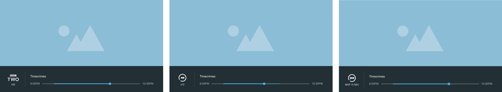
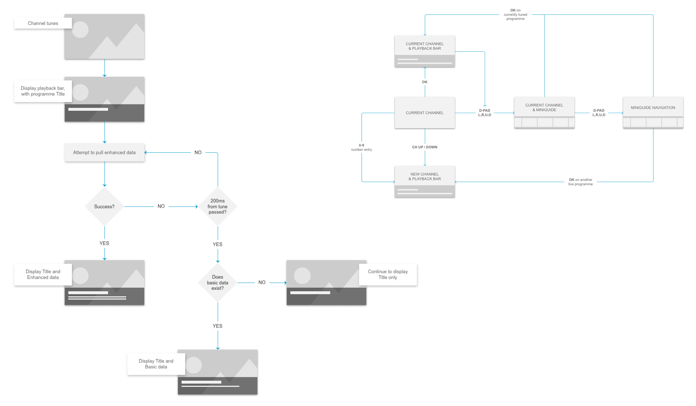
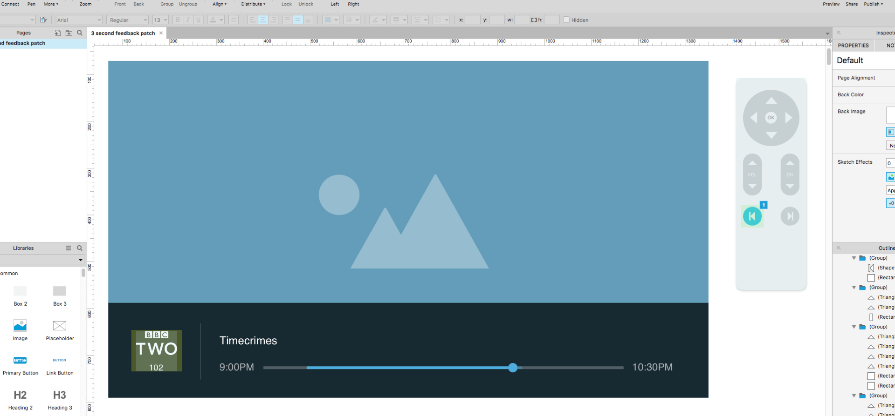
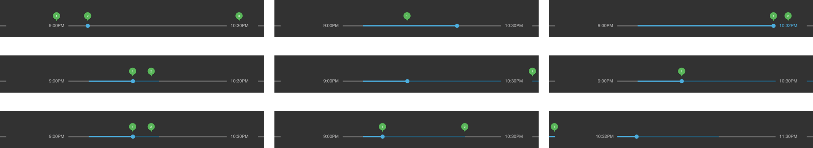

YouView TV Playback Bar
A major project at YouView was the ground up redesign and development of the playback bar. Though this particular UI element would first appear to be a rather small feature, it's function to the user is an integral part of the viewing experience.

Identifying the user needs
A set of primary use cases were identified in order to distil concepts down to something which could be designed as minimally as possible. A key aim was to ensure that it was a UI element which would not intrude on the overall viewing experience and could be invoked when users required visual feedback for navigating through the TV shows and films that they were watching.
Ideation and brainstorming
The set of user needs formed the foundation for several rounds of ideation and brainstorming sessions, the output of which were a collection of sketched ideas that would ultimately be reviewed and refined into solid concepts.
Interaction flows
This particular feature had to accommodate many complex variations of visual feedback for the user. The best method to identify the different paths and outcomes were handled with the creation of journey flows that could be used to aid both UX and design as well as the end development work.
Interactive prototypes & user research
Axure was used to create low fidelity prototypes, showing how the playback bar and feedback patch would work together in order to provide the user with appropriate feedback. These were then taken into lab test sessions with users. The aim of this research was to validate that our approach made sense and to identify areas that could be improved or altered.
Prepping for dev implementation
The final stages involved the documentation and specifications required for the dev teams. This needed to include detailed descriptions and illustrations for the behaviour of the buffer bar across multiple different scenarios, the behaviour of channel logos and feedback iconography and how these 3 elements worked together.
Next episode visual treatment
Conceptual work for how users might navigate from the playback bar to the 'next episode' feature was also incorporated into the project.